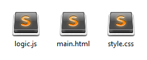
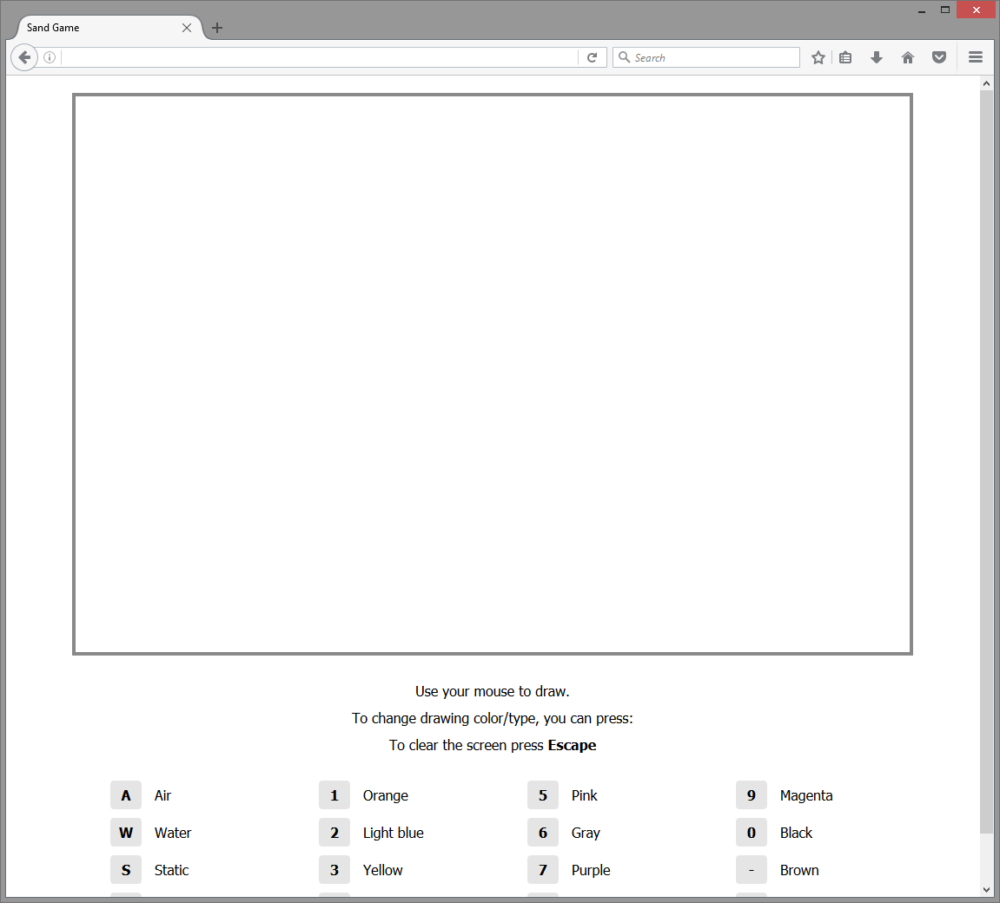
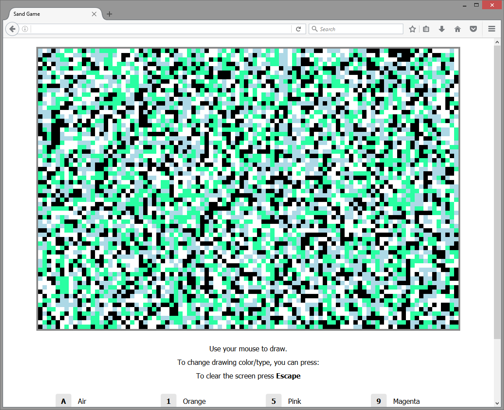

Sand is a fun physics based drawing game that you can play on your browser, you can use different colors to draw as well as change the nature of your drawn pixels to simulate the behavior of gravity on water, rock and air.
As with writing any type of game, you always need to have the following features:
Our project is quite simple, so we’ll go ahead and create 3 new files:

You can initialize a git repository if you want to keep track of your changes, but since this is a one day project, we'll go ahead without it.
Any game needs a proper User Interface, otherwise it would be unplayable, in our cases we don't need to create something fancy, so let's get started.
We'll go ahead and create our main.html file:
x<html><head> <title>Sand Game</title> <link rel="stylesheet" type="text/css" href="style.css" /></head><body> <canvas id="screen" width="960" height="640"></canvas> <section id="guide"></section> <script type="text/javascript" src="logic.js"></script></body></html>As you can see, it's quite straight forward, we have our canvas element where the game will be rendered (We'll talk about more this later in this tutorial), a guide section to explain how the game can be played and finally we include our logic JavaScript.
We'll go ahead and set the guide code block as follows:
xxxxxxxxxx <section id="guide"> <p>Use your mouse to draw.</p> <p>To change drawing color/type, you can press:</p> <p>To clear the screen press <b>Escape</b></p> <br/> <ul class="keyboard"> <li><span>A</span> Air</li> <li><span>W</span> Water</li> <li><span>S</span> Static</li> <li><span>L</span> Land</li> </ul> <ul class="keyboard"> <li><span>1</span> Orange</li> <li><span>2</span> Light blue</li> <li><span>3</span> Yellow</li> <li><span>4</span> Light Green</li> </ul> <ul class="keyboard"> <li><span>5</span> Pink</li> <li><span>6</span> Gray</li> <li><span>7</span> Purple</li> <li><span>8</span> Blue</li> </ul> <ul class="keyboard"> <li><span>9</span> Magenta</li> <li><span>0</span> Black</li> <li><span>-</span> Brown</li> <li><span>=</span> Red</li> </ul> <br class="clear" /> </section>This will display a list of keyboard keys that the player can use to change the type of pixels he's drawing. The player can also press Escape to clear the entire screen.
We can now style our UI to make nice and clean, you can go ahead and add the following code to the style.css file:
xxxxxxxxxx* { margin: 0px;}html { font-family: Tahoma;}p { text-align: center; margin-bottom: 10px;}.clear { clear: both;}#screen { margin: 20px auto 0px auto; display: block; border: 4px solid #898989;}#screen:hover { cursor: crosshair;}#guide { width: 960px; padding-top: 30px; margin: 0px auto;}.keyboard { float: left; width: 25%; margin: 0px; box-sizing: border-box; list-style: none; padding-bottom: 20px;}.keyboard li { margin-bottom: 10px;}.keyboard li span { display: inline-block; padding: 6px 0px; width: 36px; text-align: center; border-radius: 4px; background-color: #e5e5e5; font-weight: bold; margin-right: 10px;}You can now open the main.html file in your browser, and if you did everything correctly, you should see the following result:

We have a UI now! all we have to do now is bring to it life.
Since this is a drawing game, our only game object is the screen itself. So to keep things simple we'll be modeling our screen in the form of a 2 dimensional array, in the spirit of keeping things simple.
Since we're building a web game, we will be using JavaScript to write our game logic, I chose to encapsulate the entire engine into one big class called Sand, let's go ahead and add it to our logic.js file:
xxxxxxxxxx/** * Implements a physics based drawing game. * @class * @namespace * @this {Sand} */function Sand() { /* Class initialization code goes here. */}Don't be alarmed, that is indeed a function and not a class, but in JavaScript there is a nifty feature callled Prototypal Inheritance, which allows you to implement class models similar to how you would do it in Object Oriented Programming, but it is not quite the same thing, you can learn more about this here: http://javascript.crockford.com/prototypal.html
One of the best ways to program games on the web is by using the HTML5 Canvas API, which is basically a drawing board with a great set of tools that we can use to paint anything we like, from rectangles and circles to paths and images. You can learn more about it here: https://developer.mozilla.org/en-US/docs/Web/API/Canvas_API
Using Canvas will greatly simplify our task, as we can rely on ready to use functions and methods to draw stuff.
We'll go ahead and add some Canvas related properties to our class:
xxxxxxxxxx/** * Implements a physics based drawing game. * @class * @namespace * @this {Sand} */function Sand() { /** * The first property is screenCanvas which is just a reference to the DOM canvas element we * added to our html document earlier, we'll be using this to get our 2d drawing context as * well as some attributes such as the width and height which will be used later. */ this.screenCanvas = document.getElementById( "screen" ); /** * The second property, canvasContext, is the canvas context object, which contains all of * the powerful canvas APIs that you can use to interact with it. We'll use this mainly to * draw our pixels in our screen. */ this.canvasContext = this.screenCanvas.getContext( "2d" ); /** * The third property, tileSize, is the size of each "pixel" in our game screen, it's * basically the number of actual pixels our rectangular tile will occupy in the canvas box. * Starting from now we'll refer to the drawn pixels as tiles, so that we can differentiate * between the big game pixels and the actual browser/display pixels. This argument will be * used to do some calculations as well as draw our tiles. */ this.tileSize = 10; /** * The following 2 properties are the number of tiles in each direction of our screen, we * divide the actual dimensions of our canvas - that we set as element attributes in our * html file - by the tile size, which gives us how many tiles we will be able to fit in our * screen. */ this.horizontalTileCount = this.screenCanvas.width / this.tileSize; this.verticalTileCount = this.screenCanvas.height / this.tileSize; /* This is our screen, as explained earlier, this will be a 2 dimensional array. */ this.tiles = [];}/* We instantiate our class with thew new keyword. See just like OO programming! */var game = new Sand();You can go ahead and refresh your page now, if you did everything correctly, then you should see no difference compared to the previous phase, however keep an eye on your browser developer console, in case there are some errors.
Next we'll add some constants that we will be using in our physics and graphics logic, you can go ahead and add the following code to the top of your logic.js file, right before the Sand class:
xxxxxxxxxx/* Tile types and colors. */var TILE_AIR = "a", TILE_LAND = "l", TILE_WATER = "w", TILE_STATIC = "s", /* This array will be used in screen intialization */ TILE_TYPES = [ TILE_AIR, TILE_LAND, TILE_WATER, TILE_STATIC ], /* This object will be used to decide which color to use when we're drawing each tile. */ TILE_COLORS = { "a": "#ffffff", "l": "#2affa2", "w": "#add8e6", "s": "#000000", "0": "#000000", "1": "#f7941d", "2": "#00ffff", "3": "#fff200", "4": "#00ff00", "5": "#ec008c", "6": "#959595", "7": "#92278f", "8": "#0000ff", "9": "#ff00ff", "-": "#754c24", "=": "#ed1c24" };As you can see, we have 4 tile natures: air, land, water, and static tiles which can have multiple colors.
Static tiles can either have the value s or the other color values. All of them are considered static tiles, they are basically tiles that don't move when drawn and they don't have any kind of physics effect.
We'll go ahead and add a new method to our Sand class, called initialize, this method will initialize our screen data structure to randomized values, just for the fun of it. You can add this code right after your Sand class:
xxxxxxxxxx/** * Initializes the screen with randomized tiles. * @name initialize * @function * @memberof Sand * @returns {void} */Sand.prototype.initialize = function() { var i = 0, L = this.horizontalTileCount, j = 0, M = this.verticalTileCount, column = []; for( ; i < L; ++i ) { for( j = 0; j < M; ++j ) /* As you can see here, we used TILE_TYPES to get random tile natures. */ column.push( TILE_TYPES[ Math.floor( Math.random() * 4 ) ] ); this.tiles.push( column ); column = []; }};We'll go ahead and call this method in our main class constructor:
xxxxxxxxxxfunction Sand() { this.screenCanvas = document.getElementById( "screen" ); this.canvasContext = this.screenCanvas.getContext( "2d" ); this.tileSize = 10; this.horizontalTileCount = this.screenCanvas.width / this.tileSize; this.verticalTileCount = this.screenCanvas.height / this.tileSize; this.tiles = [];+ this.initialize(); /* New code! */}Note: If you're copy pasting the code, make sure to remove the + in front of each line, I am including those so that you can tell which new lines of code have been added. I highly advise you to type the code yourself, so that you can get used to it.
Now that we have our screen, we can go ahead and write some code to render it to our Canvas! To do that, we'll add a new method:
xxxxxxxxxx/** * Redraws the a set of tiles * This is an optimization to avoid redrawing the entire screen * Instead we only draw the tile that have changes. * @name drawScreen * @function * @memberof Sand * @param {Array} tilesToRedraw A list of tiles (x, y and new value ) to redraw. * @returns {void} */Sand.prototype.drawScreen = function( tilesToRedraw ) { var i = 0, L = tilesToRedraw.length, tiles = this.tiles; for( ; i < L; ++i ) { var tile = tilesToRedraw[ i ]; tiles[ tile.x ][ tile.y ] = tile.value; /* These are the only Canvas APIs we'll be using this game */ /* This one changes the filling color that canvas will be using to draw. */ this.canvasContext.fillStyle = TILE_COLORS[ tile.value ]; /** * This one tells canvas to draw a rectangle at the specified coordinates and with the * specified dimensions: x, y, width and height. */ this.canvasContext.fillRect( tile.x * this.tileSize, tile.y * this.tileSize, this.tileSize, this.tileSize ); }};As you've probably noticed, we've applied a nifty little optimization to our rendering code. Since the drawing is happening each time the game loop runs, it will significantly affect performance the larger our drawing screen gets. So to minimize this, we'll only give our drawing method a specific list of tiles to re-draw, these tiles are the ones that have changed since the last time the game loop has ran, this way we avoid redrawing everything every single time, which saves us resources and makes the game run much faster.
You can go ahead and add this code right after your initialize method.
Since we initialized our screen with random tiles, and since we have an optimized rendering algorithm, we need to render the entire screen the first time the game runs, because everything everything is new in this case. so we'll go ahead and add the following code to our Sand class constructor:
xxxxxxxxxx/** * Implements a physics based drawing game. * @class * @namespace * @this {Sand} */function Sand() { this.screenCanvas = document.getElementById( "screen" ); this.canvasContext = this.screenCanvas.getContext( "2d" ); this.tileSize = 10; this.horizontalTileCount = this.screenCanvas.width / this.tileSize; this.verticalTileCount = this.screenCanvas.height / this.tileSize; this.tiles = [];+ this.isDrawing = false; /* Flag: To check if we're currently drawing with the mouse. */+ this.currentTileType = "s"; /* Current drawing tile type. Black static tile by default. */ this.initialize();+ var x = 0, L = this.horizontalTileCount,+ y = 0, M = this.verticalTileCount,+ tiles = this.tiles,+ tilesToRedraw = [];+ for( ; x < L; x++ ) {+ for( y = 0; y < M; y++ ) {+ tilesToRedraw.push(+ { x: x, y: y, value: tiles[ x ][ y ] }+ );+ }+ }+ this.drawScreen( tilesToRedraw );}Go ahead and refresh your game page now, you should now see some results at last!

As you can see, the initialize method did its job!
Let's go ahead and write our main game loop, which will be in the form of a method named render. This method will run continuously and will execute all the logic and drawing code.
Instead of using a traditional loop, and to maximize frame rate performance we will be using the HTML5 requestAnimationFrame API, this method allows our logic and rendering to run before the browser paints the next frame, which will make our animations run much smoother, and save resources when we're not focused on the game browser tab, since it gets paused in that case. You can learn more about this feature here: https://css-tricks.com/using-requestanimationframe/
Go ahead and this code right after your drawScreen method
xxxxxxxxxx/** * Start the rendering game loop. * This handles all the game physics * @name render * @function * @memberof Sand * @returns {void} */Sand.prototype.render = function() { var tilesToRedraw = []; /* Redraw the changed tiles. */ this.drawScreen( tilesToRedraw ); /* Execute the render function at next browser frame redraw. */ requestAnimationFrame( this.render.bind( this ) );};And then call it after you instantiate your class, so that the game loop can start to run.
xxxxxxxxxx var game = new Sand();+ game.render(); /* Start the game! */As explained in the beginning, our tiles will simulate gravity behavior that depends on their specific nature, whether it is water, air or land/stone.
We'll create a new method called applyPhysics which will loop through all tiles in our screen and apply a specific gravity behavior when it finds the required conditions for it to behave in such way. for instance if a land/stone tile is above a water tile, then the land/stone tile should switch places with as if it was faling through it, hence simulating gravity, we can apply the same logic for water/air and land/water situations.
We will also add one last behaviour specific to the water tiles. Since water is not solid, it moves if doesn't find a stable container where it can reach equilibrium. So to simulate this, we'll look for water tiles that have air tile neihbours and simply switch places with them. We'll also flip a coin to decide the direction our water tile will go.
This little trick will allows us to achieve a "liquid" effect, though not a 100% simulation, but it is close enough to pass.
Once this method finishes running, it will return the list of tiles that were affected, so that we can re-draw them as explained earlier.
You can go ahead and add the following code right below your drawScreen method:
xxxxxxxxxx/** * Applie gravity effect on each type of tile. * This affects tiles of nature: water, air and land. * @name applyPhysics * @function * @memberof Sand * @returns {void} */Sand.prototype.applyPhysics = function() { var x = 0, L = this.horizontalTileCount, y = 0, M = this.verticalTileCount, tiles = this.tiles, tile, tileBelow, tileBefore, tileBelowBefore, tilesToRedraw = [], changeOccurred = false; for( ; x < L; x++ ) { for( y = 0; y < M; y++ ) { tile = tiles[ x ][ y ]; tileBelow = tiles[ x ][ y + 1 ]; changeOccurred = false; if( y < M - 1 ) { /* Land tiles go down if there is water or air below them */ if( tile === TILE_LAND && ( tileBelow === TILE_AIR || tileBelow === TILE_WATER ) ) { changeOccurred = true; } else if( tile === TILE_WATER && tileBelow === TILE_AIR ) { /* Water tiles go down if there is air below them. */ changeOccurred = true; } /* Mark these tiles as changed, to avoid checking them again in the loop. */ if( changeOccurred ) { tilesToRedraw.push( { x: x, y: y, value: tileBelow }, { x: x, y: y + 1, value: tile } ); tiles[ x ][ y ] = -1; tiles[ x ][ y + 1 ] = -1; changeOccurred = false; } /* Do a coin flip and decide which direction to move water tiles, to simulate water behaviour. */ if( x > 0 ) { tileBefore = tiles[ x - 1 ][ y ]; tileBelowBefore = tiles[ x - 1 ][ y + 1 ]; var cointFlip = Math.floor( Math.random() * 2 ); if( cointFlip && tile === TILE_WATER && tileBefore == TILE_AIR && tileBelow !== TILE_AIR ) { changeOccurred = true; } else if( !cointFlip && tile === TILE_AIR && tileBefore === TILE_WATER && tileBelowBefore !== TILE_AIR ) { changeOccurred = true; } /* Mark these tiles as changed, to avoid checking them again in the loop. */ if( changeOccurred ) { tilesToRedraw.push( { x: x, y: y, value: tileBefore }, { x: x - 1, y: y, value: tile } ); tiles[ x ][ y ] = -1; tiles[ x - 1 ][ y ] = -1; } } } } } return tilesToRedraw;};And then call it in your render method:
xxxxxxxxxxSand.prototype.render = function() {+ var tilesToRedraw = this.applyPhysics(); /* We replaced the previous line with a call to the physics method. */+ /* Redraw the changed tiles. */+ this.drawScreen( tilesToRedraw ); /* Execute the render function at next browser frame redraw. */ requestAnimationFrame( this.render.bind( this ) );};Refresh your page and check the results, you've got animation now! As you can see blue tiles behave like water, green tiles behave like land/stone, pretty cool!
We're almost done with our game, all that is left now is to add our user input handling logic, since our game runs on the web, we can simple use the good old event listeners and set up callbacks to apply the changes.
Mouse events:
Keyboard events:
We'll go ahead and create a new method called setupEvents
You can add this code right below your initialize method:
xxxxxxxxxx/** * Setup keyboard and mouse events* * - Keyboard: To change tile type and to reset the screen * - Mouse: To draw tiles. * @name setupEvents * @function * @memberof Sand * @returns {void} */Sand.prototype.setupEvents = function() { var screenCanvas = this.screenCanvas; screenCanvas.addEventListener( "mousedown", this.startDrawing.bind( this ) ); //The state of clicking mouse. document.addEventListener( "mouseup", this.stopDrawing.bind( this ) ); //The state of mousebutton1 is up. document.addEventListener( "mousemove", this.processDrawing.bind( this ) ); document.addEventListener( "keypress", this.updateCurrentTileType.bind( this ) ); document.addEventListener( "keyup", this.clearScreen.bind( this ) );};All we've done is ask the browser to execute those callbacks every time an event is detected.
Note: We use the bind method to tell the browser to execute the callbacks with the right this context, you can learn more about this here: https://www.smashingmagazine.com/2014/01/understanding-javascript-function-prototype-bind/
Let's add our input handling methods now, you can add this right below your setupEvents method:
xxxxxxxxxx/** * Enables drawing when the mouse moves * This gets executed when we hold the left mouse button down. * @name startDrawing * @function * @memberof Sand * @param {Object} event DOM event object. * @returns {void} */Sand.prototype.startDrawing = function( event ) { this.isDrawing = true; this.processDrawing( event );};/** * Disable drawing when the mouse moves * This gets executed when we release the left mouse button. * @name stopDrawing * @function * @memberof Sand * @param {Object} event DOM event object. * @returns {void} */Sand.prototype.stopDrawing = function( event ) { this.isDrawing = false;};/** * Changes the tile type that we're currently drawing * This gets executed when we press the relevant keyboard keys. * @name updateCurrentTileType * @function * @memberof Sand * @param {Object} event DOM event object. * @returns {void} */Sand.prototype.updateCurrentTileType = function( event ) { if( !TILE_COLORS[ event.key ] ) return; this.currentTileType = event.key;};/** * Draws the tile at the current mouse position * This gets executed when we move the mouse and when drawing mode is on. * @name processDrawing * @function * @memberof Sand * @param {Object} event DOM event object. * @returns {void} */Sand.prototype.processDrawing = function( event ) { if( !this.isDrawing ) return; var targetTile = { x: Math.floor( ( event.pageX - this.screenCanvas.offsetLeft ) / this.tileSize ), y: Math.floor( ( event.pageY - this.screenCanvas.offsetTop ) / this.tileSize ) }; /** * If we're currently drawing and the mouse is on top of a tile, we redraw it. * We basically check if the mouse is inside the screen boundaries. */ if( targetTile.x >= 0 && targetTile.x < this.horizontalTileCount && targetTile.y >= 0 && targetTile.y < this.verticalTileCount ) { this.drawScreen( [{ x: targetTile.x, y: targetTile.y, value: this.currentTileType }]); } };/** * Replaces all tiles with air tiles. * This gets executed when we press the Escape keY> * @name clearScreen * @function * @memberof Sand * @param {Object} event DOM event object. * @returns {void} */Sand.prototype.clearScreen = function( event ) { if( event.keyCode !== 27 ) return; var x = 0, L = this.horizontalTileCount, y = 0, M = this.verticalTileCount, tiles = this.tiles, tilesToRedraw = []; for( ; x < L; x++ ) { for( y = 0; y < M; y++ ) { this.tiles[ x ][ y ] = TILE_AIR; tilesToRedraw.push( { x: x, y: y, value: TILE_AIR } ); } } this.drawScreen( tilesToRedraw );};The code is quite simple and straight forward, just read the accompanying comments and it should be easy to understand.
The moment of truth, all we have to do now, is call our setupEvents method within our Sand class constructor:
xxxxxxxxxxfunction Sand() { this.screenCanvas = document.getElementById( "screen" ); this.canvasContext = this.screenCanvas.getContext( "2d" ); this.tileSize = 10; this.horizontalTileCount = this.screenCanvas.width / this.tileSize; this.verticalTileCount = this.screenCanvas.height / this.tileSize; this.tiles = []; this.isDrawing = false; /* Flag: To check if we're currently drawing with the mouse. */ this.currentTileType = "s"; /* Current drawing tile type. Black static tile by default. */ this.initialize();+ this.setupEvents(); var x = 0, L = this.horizontalTileCount, y = 0, M = this.verticalTileCount, tiles = this.tiles, tilesToRedraw = []; for( ; x < L; x++ ) { for( y = 0; y < M; y++ ) { tilesToRedraw.push( { x: x, y: y, value: tiles[ x ][ y ] } ); } } this.drawScreen( tilesToRedraw );}Go ahead and refresh your game now, you will be able to change the drawing type of your tile just by pressing the associated keys and draw whatever you like, just make sure to press Escape to get a clean drawing screen.